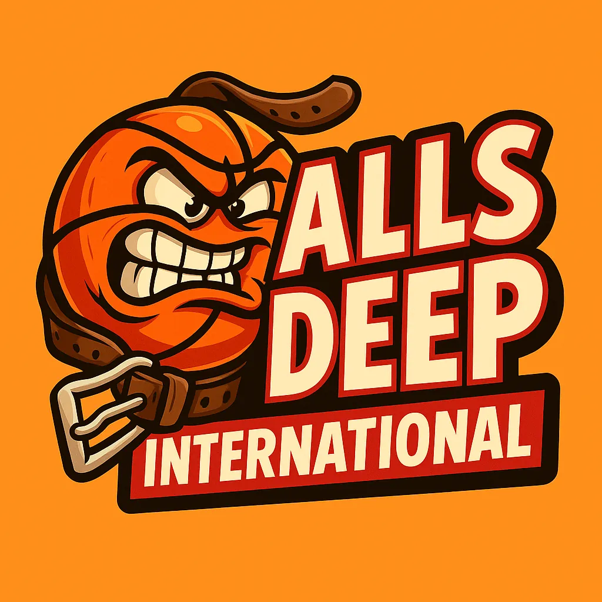

From the trenches of sports betting degeneracy. Names withheld. Dignity already lost.
What you're about to read are real confessions submitted anonymously by real degenerates. We asked our community one simple question: "What's the worst thing sports betting has made you do?"
The responses were immediate, numerous, and deeply concerning. We have not edited these for content, only for length and identifying details. If you see yourself in any of these, just know: you're not alone. You're surrounded by equally questionable people. That's not comfort. That's a warning.
THE CONFESSIONAL IS ALWAYS OPEN
New confessions are accepted on a rolling basis. Anonymity is guaranteed because honestly, nobody wants credit for any of this. If you have a confession that belongs here, you already know it does. The only requirement is honesty. And we both know you're better at being honest about gambling than about anything else in your life.
Balls Deep International reminds you that if any of these confessions hit uncomfortably close to home, the National Problem Gambling Helpline is 1-800-522-4700. They're open 24/7, which is convenient because so are most sportsbook apps.